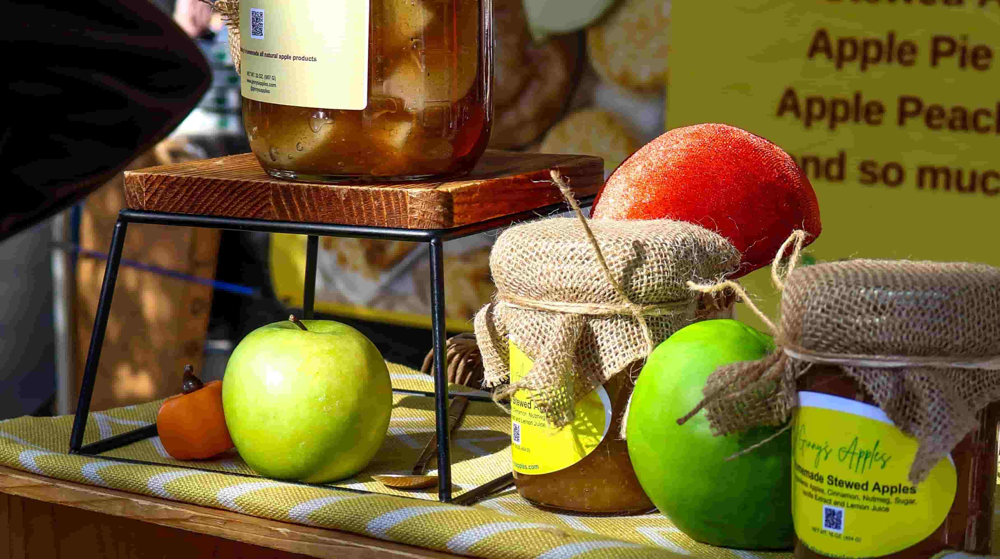
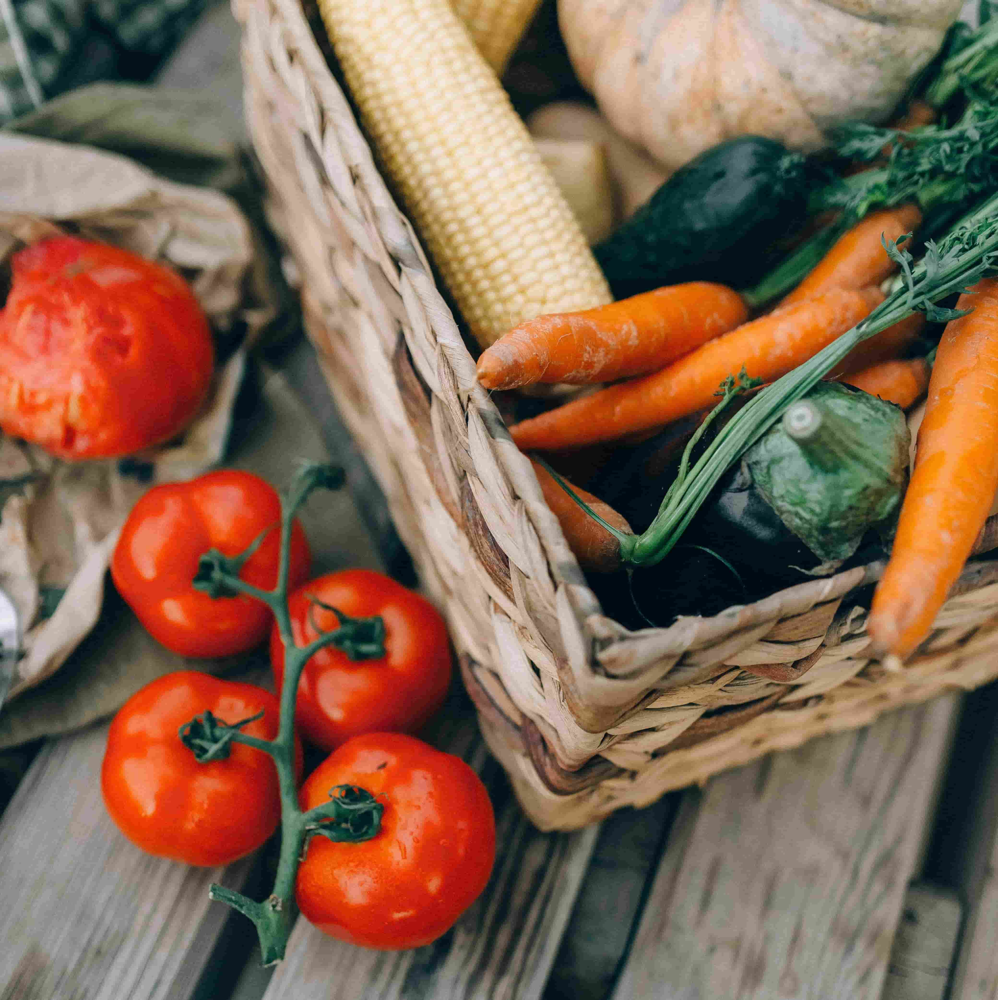
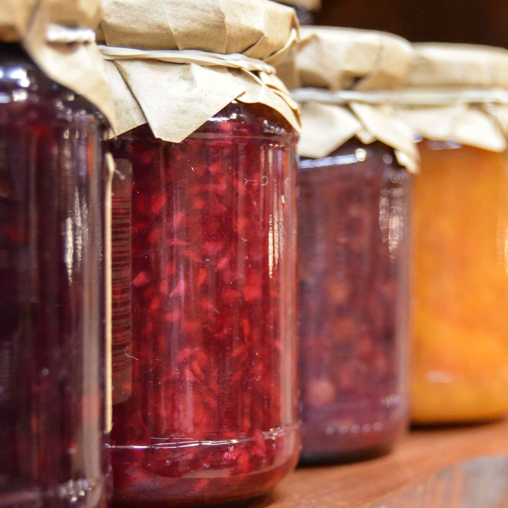
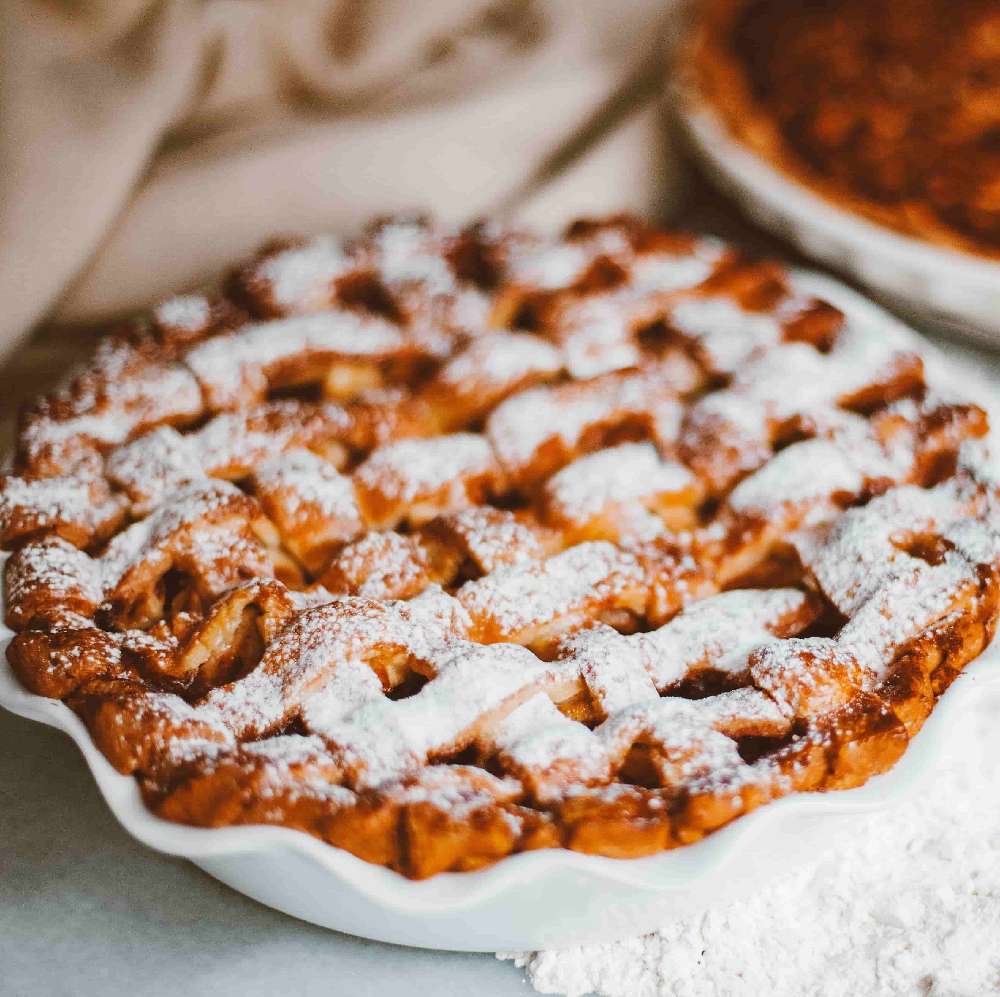

Abbington Farm Shop
At Abbington Farm Shop, we take pride in offering a wide range of fresh, locally produced food and drink. From free-range eggs, home-reared pork, and garden-fresh vegetables to homemade jams, preserves, honey, and handmade chocolates, there's something for everyone. We also stock freshly baked breads, cakes, award-winning pies, and a selection of locally sourced fruit juices, wines, beers, and ciders, bringing the very best of local produce to our customers.
 |
Local ProduceOur free-range eggs are laid daily by the chickens on our farm. We also offer home-reared pork from animals raised in the surrounding fields. Fresh seasonal vegetables grown in our garden are available throughout the year. |
PreservesOur jams and preserves are made using fruit grown on the farm whenever possible. We also stock local honey, marmalade and a range of traditional preserves. For a special treat, browse our selection of handmade chocolates. |
 |
 |
BakeryFresh bread is baked daily using quality ingredients. Choose from a tempting selection of homemade cakes and sweet treats. Our award-winning pies feature seasonal fillings, including apricot and blackberry. |